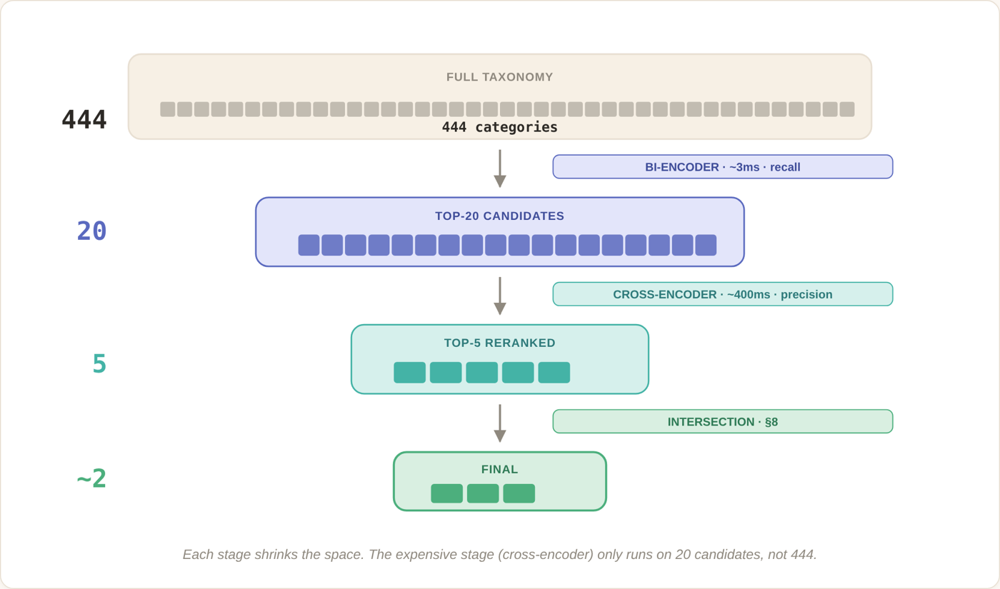

Audience profiles — their attributes and their social relationships — have to reflect new data as it arrives. Batch refreshes weren't keeping up, and the lake behind them is over 15 TB.
What I did. I created the Iceberg tables that streaming services now write to, and I maintain them. I led the migration of social-relationship data into Iceberg: schema changes were coordinated with every dependent consumer while they kept reading. I then completed the platform's move from batch to fully real-time enrichment. Along the way I tested whether large batches of geolocation lookups could hit the lake directly instead of an indexed database; they couldn't do it efficiently, so that path stayed on scheduled Spark jobs.
Result. More than 20 streaming consumers read and write the same Iceberg tables in real time, and enrichment no longer waits for a batch window.
Apache IcebergParquetKafkaRedpandaAWS ECSSpark
Query engine & performance
Cutting Trino query time, network and failures
Audience reports run as a sequence of heavy Trino queries over the lake. They were slow, shuffled enormous amounts of data between workers, and failed often enough that the services depending on them had to handle it themselves.
What I did. I profiled query patterns and S3 access to see where the time went, then rewrote the worst steps and added Iceberg table statistics so Trino's cost-based optimizer picked better join orders — far less data shuffled between workers and far less CPU spent on it. One step wasn't expensive, just starved: I added a worker-allocation rule so it stopped waiting behind everything else. I also put a retry layer in front of the engine so transient failures stopped reaching callers.
Result (same query mix, ~3,500 completed report queries the week before and the week after). Median query time down 28–51% per step and p90 down 42–60%. Internal network per query down 93%: five steps went from 15–117 GB each to under 0.05 GB. CPU per query halved overall, down 91% in the worst step. The starved step went from 301 s to 159 s at the median and 950 s to 235 s at p90 with the same CPU and bytes — pure parallelism. Failure rate from 2.2% in the worst week to under 0.2% sustained.
TrinoApache IcebergS3
Machine learning & NLP
Interest classification: trusting agreement instead of a score
Given a profile's bio and recent posts, assign the few interests that describe it from a taxonomy of 444 categories. The first version embedded the text, compared it against the category embeddings and kept the closest ones above a cosine threshold. Aggregate metrics looked fine. Individual cases didn't: religious profiles in several languages landed in primary education and k-12, cricket looked like rugby, any holiday phrase triggered honeymoons. Some categories acted as attractors, and the model was often confident when it was wrong — raising the threshold didn't separate those errors from the good assignments.
Step one: adapt the embeddings. I fine-tuned the embedding model with LoRA on examples labelled against our own taxonomy, adding hard negatives (the categories the base model kept confusing) and a contrastive recipe (MultipleNegativesRankingLoss + Matryoshka loss). On a held-out, human-labelled test set, F1 went from 0.255 to 0.390 — a 53% relative gain, done on consumer hardware. Along the way we nearly shipped a checkpoint that scored 0.005 after reload because of an interaction between load_best_model_at_end, PEFT and adapter saving; since then a save isn't done until a clean reload reproduces the metric.
Step two: measure properly. Better F1 didn't remove the attractors. We hand-judged 504 production assignments, 84 per confidence band. Strict precision means a human, reading the original text, accepts the assigned category outright — no benefit of the doubt. Overall it was 46%. By band it went from 24% at cosine 0.50–0.55 to 79% above 0.80, so a high threshold would have been precise but would have left too few profiles classified.
Step three: a second opinion. I added a cross-encoder to rerank the bi-encoder's top-20 candidates, reading each profile–category pair together. A 30-entity pilot suggested a threshold on the reranker score would fix everything (79% strict precision). At 300 entities and 1,150 judgements it didn't hold: reranker scores of 0.95 for categories outside the bi-encoder's top-5 were right only 38% of the time, while scores of 0.05 for categories inside it were right 68% of the time. The useful signal wasn't either model's score. It was whether the two models agreed.
What shipped. A category survives only if it's in both the bi-encoder's top-5 and the reranker's top-5. No threshold on the cross-encoder score. If the intersection is empty, the profile is left unclassified rather than given a doubtful category. Inference runs on Kubernetes with vLLM and is wired to a streaming consumer, so profiles are enriched as they arrive; the same serving layer also runs Qwen models for other near-real-time LLM enrichment.

Result (300 entities, 1,150 human judgements). Strict precision 36% → 52% (+44% relative); generous precision 58% → 71%. The price: ~1.5–2 categories per profile instead of ~3, and 20–30% of profiles with no output instead of ~20%. For audience segmentation that trade is right — a false positive contaminates a segment, an unclassified profile is easy to handle.
The full story, with the failure cases and the numbers behind each decision, is going out on the Audiense engineering blog as Two models, one AND.
VEGA: one way in to the data instead of a copy per team
Every product team that needed audience data kept its own copy: an RDS here, a Mongo there, each fed by its own ETL and Spark jobs pulling from the lake. Several versions of the same data, several pipelines to keep alive, and every team paying for the storage and the compute twice.
What I did. I designed VEGA, an asynchronous query platform on top of the Trino work above: a team submits an aggregation, gets an id, and fetches the result when it's ready. Queues decouple submission from execution; every execution is traceable and retried on failure; Redis-based rate limiting keeps demand under control. I added a data catalog, query examples and a query builder, then worked with each team on their integration so they could drop their copy.
Result. Teams read from the lake directly instead of maintaining local copies, so the ETLs and Spark jobs that populated them went away, along with the databases they filled. One source of truth, one place to fix a schema change, and product verticals that were previously blocked by data volume now run on VEGA.
FastAPITrinoAthenaRedisRedpanda
Machine learning & NLP
Resolving TikTok mentions to Wikidata entities
A mention in a TikTok post has to be linked to a real-world entity before it can enrich anything.
What I did. I built a system that matches mentions to Wikidata identities, with a review step that catches wrong matches before other services consume them. It publishes complete, versioned datasets to Iceberg, so consumers keep reading a consistent version while the next one is being prepared.
WikidataNERApache IcebergKubernetes CronJob
Machine learning & NLP
Extracting usable phrases from multilingual bios
Social media bios mix languages, abbreviations, emojis and hashtags. The interest classifier needs clean phrases.
What I did. I built a spaCy pipeline over nine languages that extracts meaningful phrases, filters noise and removes duplicates. Its output feeds the interest classifier above.
spaCyPython
Product & analytics
Influencer recommendations when the graph is sparse
With limited follower data, relevant influencers couldn't be ranked from the social graph alone.
What I did. I used Watson NLU interest categories to build a representative proxy audience, then matched it against influencers' follower bases.
Result. A working recommendation path for the cases where graph data alone wasn't enough.
Watson NLU
Own time
Personal projects
Prototypes I built to understand something, not products. Scope is stated in each one.
Agents & MCP
Hermes Expense Tracker
Shared household expenses, tracked by talking to an assistant instead of filling in an app.
What I built. A Python FastMCP server that owns the business rules and the SQLite persistence. Each household member has a Hermes Agent profile, over Telegram or the CLI, that calls the server's domain tools — the language model handles the conversation and never the arithmetic. It supports per-person allocations, shared projects with membership-based visibility, budgets, recurring expense templates, and reports with charts, in English and Spanish, with installers for the platforms we use at home.
I wanted to understand how voice agents actually work end to end. A simulated clinical pre-screening interview gave me a scenario with structure: questions, inclusion criteria, exclusion criteria.
What I built. A streaming pipeline — Deepgram for speech to text, a language model through OpenRouter for the dialogue, ElevenLabs for speech — connected over LiveKit/WebRTC. Conversation state moves through explicit transitions rather than living in the prompt, and it's persisted to SQLite in WAL mode so a crash mid-interview can be recovered. Automated tests cover the state machine.
Private repository.
LiveKitDeepgramElevenLabsOpenRouterSQLite
Voice agents & harnesses
Math tutor: a voice agent that can't be wrong about the math
Can a language model hold a natural tutoring conversation while deterministic code decides what's correct and what comes next?
What I built. A Spanish-speaking voice tutor on LiveKit, same STT → LLM → TTS shape as above. The model proposes an interpretation of what the student said and a pedagogical action; a harness validates both before any domain code changes the learning state or a response is released. The educational rules are separated from the model and voice providers, state lives in SQLite, and the core loop is evaluated offline.
Scope: primary-school arithmetic, one student at a time. A prototype for engineering experiments, not a product.
An Obsidian vault I maintain with Hermes Agent, organised as an LLM wiki: source papers and articles sit next to linked concept notes, technology profiles and architecture comparisons. Current topics are agent harnesses, tool use, RAG, observability, and conversational turn-taking. The voice prototypes above started as notes here.